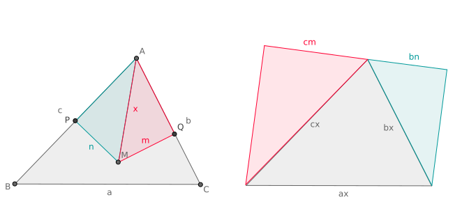

正弦/余弦定理
正弦定理
由面积关系
`2S = b c sin A = a c sin B`, 得到:
`(sin A)/a = (sin B)/b`.
此外有圆周角和其所对弦长的关系 `a = 2 R sin A`.
三角形的面积
Heron 公式
设三角形的三边长分别为 `a, b, c`, 其周长的一半为 `p = (a+b+c)//2`,
则三角形的面积为
`S = sqrt(p(p-a)(p-b)(p-c))`.
记边 `a, b` 的夹角为 `C`, 利用余弦定理
`cos C = (a^2+b^2-c^2)/(2a b)`,
有
`16S^2 = 16 (1/2 a b sin C)^2`
`= (2a b)^2 (1-cos^2 C)`
`= (2a b)^2 (1+(a^2+b^2-c^2)/(2a b)) (1-(a^2+b^2-c^2)/(2a b))`
`= [(a+b)^2-c^2][c^2-(a-b)^2]`
`= (a+b+c)(a+b-c)(c+a-b)(c-a+b)`,
结论得证.
三维欧氏空间中,
`cos AOC = alpha`, `cos BOC = beta`, `cos AOB = gamma`.
求 `OC` 与平面 `AOB` 的夹角余弦值 `rho`.
不妨设 `OC = 1`, 作 `CH` 垂直平面 `AOB` 于 `H`, 则 `OH = rho`,
`cos AOH = alpha//rho`, `cos BOH = beta//rho`,
于是
`gamma = cos AOB`
`= cos(AOH +- BOH)`
`= (alpha beta -+ sqrt((rho^2-alpha^2)(rho^2-beta^2)))/rho^2`.
`OC` 不垂直于平面 `AOB` 时, 解得
`rho^2 = (alpha^2 + beta^2 - 2alpha beta gamma)/(1-gamma^2)`.
显然上式也适用于 `OC` 垂直于平面 `AOB` 的情形.
Euler 四面体问题
已知四面体六棱长, 求体积.
记这个四面体为 `OABC`, 其中 `OA = a`, `OB = b`, `OC = c`,
`AB = p`, `AC = q`, `BC = r`.
利用余弦定理,
`gamma := cos AOB = (a^2+b^2-p^2)/(2a b)`,
`alpha := cos AOC = (a^2+c^2-q^2)/(2a c)`,
`beta := cos BOC = (b^2+c^2-r^2)/(2b c)`.
利用引理有
`V^2 = (1/3 S_(AOB) h)^2`
`= (1/6 a b sin AOB h)^2`
`= (1/6 a b c)^2 (1-gamma^2) (1-alpha^2-beta^2-gamma^2 + 2alpha
beta gamma)/(1-gamma^2)`.
即
`((6V)/(a b c))^2 = 1-alpha^2-beta^2-gamma^2 + 2alpha beta gamma`.
记号同前一种解法. 又记 `vec(OA) := bm a = (a_1, a_2, a_3)`, `vec(OB)
:= bm b = (b_1, b_2, b_3)`, `vec(OC) := bm c = (c_1, c_2, c_3)`, 则
`36 V^2 =
|a_1, a_2, a_3; b_1, b_2, b_3; c_1, c_2, c_3|
|a_1, b_1, c_1; a_2, b_2, c_2; a_3, b_3, c_3|`
`= |
bm a * bm a, bm a * bm b, bm a * bm c;
bm b * bm a, bm b * bm b, bm b * bm c;
bm c * bm a, bm c * bm b, bm c * bm c
|`
`= |
a^2, gamma a b, alpha a c;
gamma a b, b^2, beta b c;
alpha a c, beta b c, c^2
|`
`= (a b c)^2 | 1, gamma, alpha; gamma, 1, beta; alpha, beta, 1 |`
`= (a b c)^2 (1-alpha^2-beta^2-gamma^2 + 2 alpha beta gamma)`.
结果与前相同.
设有矩形 `ABCD`, `E, F` 分别在边 `BC, CD` 上,
`S_(ABE) = x`, `S_(ADF) = y`, `S_(CEF) = z`. 求 `S_(AEF)`.
设 `AB = a`, `AD = b`, 则 `BE = (2x)/a`, `DF = (2y)/b`.
利用 `S_(CEF)` 列出方程:
`(b-(2x)/a)(a-(2y)/b) = 2 z`,
即
`(a b-2x)(a b-2y) = 2 a b z`.`
上式视为 `a b` 的方程, 解得
`a b = x+y+z +- sqrt((x+y+z)^2-4x y)`.
显然 `a b gt x + y + z`, 上式应取正号, 所以
`S_(AEF) = sqrt((x+y+z)^2-4x y)`.
定比分点与三角形的心
定比分点公式
设 `AB` 为一线段 (`A != B`).
如果点 `C` 满足 `vec(AC) = lambda vec(CB)`, 则称点
`C` 分线段 `AB` 成定比 `lambda`.
- 若 `lambda = -1`, 得到 `vec(AB) = bb 0`, 矛盾, 故 `lambda != -1`.
- 若 `lambda gt 0`, `vec(AC)`, `vec(CB)` 同向, 称 `C`
为内分点;
- 若 `lambda lt 0` 且 `lambda != -1`,
`vec(AC)`, `vec(CB)` 反向, 称 `C` 为外分点;
- 若 `lambda = 0`, `C = A`;
- `lambda to +oo` 时, `C to B`;
定比分点公式
设 `O` 是平面上任一点. 点 `C` 分 `AB` 成定比
`lambda != -1`. 则
`vec(OC) = 1/(1+lambda) (vec(OA) + lambda vec(OB))`.
为方便应用, 取 `lambda = b//a`, 得
`vec(OC) = 1/(a + b) (a vec(OA) + b vec(OB))`.
特别取 `lambda = 1`, 知 `AB` 中点 `M` 满足
`vec(OM) = 1/2 (vec(OA) + vec(OB))`.
三向量的定比分点公式
设 `O` 是平面上任一点,
考虑 `triangle ABC` 内一点 `M`, 如果记
`S_(ABC) = S`, `S_(BCM) = S_A`, `S_(CAM) = S_B`, `S_(ABM) = S_C`, 则
`vec(OM) = 1/S (S_A vec(OA) + S_B vec(OB) + S_C vec(OC))`.
延长 `CM` 交 `AB` 于 `X`, 注意到 `X` 分 `AB` 成定比 `S_B//S_A`, 有
`vec(OX) = 1/(S_A + S_B) (S_A vec(OA) + S_B vec(OB))`.
另外, 容易得到 `S_(AXM) = S_C S_B/(S_A + S_B)`, 故知 `M` 分 `CX`
成定比 `S_B/S_(AXM) = (S_A + S_B)/S_C`. 从而
`vec(OM) = 1/(S_A+S_B+S_C)[(S_A+S_B) vec(OX) + S_C vec(OC)]`
`= 1/S (S_A vec(OA) + S_B vec(OB) + S_C vec(OC))`.
设 `P, Q, R` 分别分 `triangle ABC` 的边 `AB, BC, CA` 成定比 `lambda,
mu, nu`, 则
- Menelaus 定理 `P, Q, R` 共线当且仅当 `lambda mu nu = -1`;
- Ceva 定理 若 `P, Q, R` 都是内分点, 则
`AQ, BR, CP` 共点当且仅当 `lambda mu nu = 1`.
- 容易写出
`vec(A P) = lambda/(1+lambda) vec(A B)`,
`quad vec(A Q) = 1/(1+mu) vec(A B) + mu/(1+mu) vec(A C)`,
`quad vec(A R) = 1/(1+nu) vec(A C)`.
三点 `P, Q, R` 共线当且仅当它们围成的三角形面积为零, 即
`0 = |
lambda/(1+lambda), 0, 1;
1/(1+mu), mu/(1+mu), 1;
0, 1/(1+nu), 1;
|`
`iff`
`0 = |
lambda,0,1+lambda;
1,mu,1+mu;
0,1,1+nu;
|`
`= |
lambda,0,1;
1,mu,0;
0,1,nu;
|`
`= lambda mu nu + 1`.
- 设三线交于点 `M`, 利用等式
` lambda mu nu
= (AP * BQ * CR)/(BP * CQ * AR)
= (S_(AMC) * S_(BMA) * S_(CMB))
/ (S_(BMC) * S_(CMA) * S_(AMB))
= 1`
立即得到必要性. 为证充分性, 设 `AQ`, `BR` 交于 `M`,
容易看出, 上式成立当且仅当 `M` 在 `CP` 上, 即三线共点.
角元 Ceva 定理
设 `P, Q, R` 分别是 `triangle ABC` 三边 `AB, BC, CA` 的内分点,
六个角 `/_ ACP`, `/_ PCB`, `/_ BAQ`, `/_ QAC`, `/_ CBR`, `/_ RBA`
依次记为 `/_ 1` 到 `/_ 6`, 则 `AQ, BR, CP` 共点当且仅当
`sin /_1 sin /_3 sin /_5 = sin /_2 sin /_4 sin /_6`.
必要性: 设三线共点于 `M`. 由正弦定理
`(sin /_1)/(AM) = (sin /_4)/(CM)`,
`quad (sin /_5)/(CM) = (sin /_2)/(BM)`,
`quad (sin /_3)/(BM) = (sin /_6)/(AM)`.
三式相乘即得结论.
充分性的证明与 Ceva 定理类似.
设圆周上顺次有 `A, B, C, D, E, F` 六点, 则
`AD, BE, CF` 共点当且仅当
`AB * CD * EF = BC * DE * FA`.
在 `triangle ACE` 中应用角元 Ceva 定理,
注意到圆周角所对的弦长正比于该圆周角的正弦值
(事实上有 `a = 2 R sin theta`, `a` 为弦长, `R` 为半径, `theta`
为圆周角), 即得结论.
三角形的重心
由 Ceva 定理知, 三角形三条中线交于一点, 称这点为三角形的重心.
设 `G` 是 `triangle ABC` 的重心, `P, Q, R` 分别是边
`AB, BC, CA` 的中点. 则
- 三条中线将三角形分成了面积相等的 6 个小三角形;
- `G` 分三条中线 `AQ, BR, CP` 成定比 2, 从而
`vec(AG) = 1/3 (vec(AB) + vec(AC))`,
`vec(BG) = 1/3 (vec(BC) + vec(BA))`,
`vec(CG) = 1/3 (vec(CA) + vec(CB))`,
`vec(AG) + vec(BG) + vec(CG) = bb 0`.
- `vec(OG) = 1/3 (vec(OA) + vec(OB) + vec(OC))`, `O` 是平面上任一点.
- 略.
- 由 1, `S_(ABG) = 2 S_(QBG)`, 所以 `AG = 2GQ`; 因而
` vec(AG)
= 2/3 vec(AQ)
= 2/3 * 1/2 (vec(AB) + vec(AC))`
`= 1/3 (vec(AB) + vec(AC))`.
其余各式同理.
- 这是的直接推论,
当然也可以直接计算:
`{:
vec(OG) ,= vec(OA) + vec(AG);
,= vec(OA) + 1/3 (vec(AB) + vec(AC));
,= vec(OA) + 1/3 (vec(OB) - vec(OA) + vec(OC) - vec(OA));
,= 1/3 (vec(OA) + vec(OB) + vec(OC)).
:}`
三角形的内心
`P` 在 `triangle ABC` 的 `AB` 边上,
`CP` 平分 `angle ACB`, `a, b` 分别是 边 `BC, CA` 的长. 则
- `(AP)/(BP) = (sin angle B)/(sin angle A) = b/a`;
- `vec(CP) = 1/(a+b) (a vec(CA) + b vec(CB))`.
- 由正弦定理,
` (AP)/(sin angle ACP)
= (CP)/(sin angle A)
= (AC)/(sin angle APC)`,
` (BP)/(sin angle BCP)
= (CP)/(sin angle B)
= (BC)/(sin angle BPC)`.
两式相除, 注意 `angle ACP = angle BCP` 和
`angle APC + angle BPC = pi` 即得证.
- 由结论 1 应用定比分点公式即得.
由 Ceva 定理和知,
三角形的三条角平分线交于一点, 称为三角形的内心.
内心是三角形内接圆的心.
另一个证明三条角平分线共点的思路是利用如下命题:
设 `l` 是过角的顶点的直线, 则以下三款等价:
- `l` 平分角;
- `l` 上任意一点到角两边的距离相等;
- `l` 上存在一点到角两边的距离相等.
容易证明, 若三角形的两条角平分线交于一点,
则这点与第三点的连线是第三条角平分线.
设 `I` 是 `triangle ABC` 的内心, `P, Q, R` 分别是三条角平分线与
`AB, BC, CA` 的交点. 则
- 三条角平分线将 `triangle ABC` 分成的 6 个小三角形的面积与其在
`triangle ABC` 边上的那一条边长成正比.
- `I` 分别分三条角平分线 `AQ, BR, CP` 成定比
`(b+c)/a`, `(c+a)/b`, `(a+b)/c`, 从而
`vec(AI) = 1/(a+b+c) (b vec(AB) + c vec(AC))`,
`vec(BI) = 1/(a+b+c) (c vec(BC) + a vec(BA))`,
`vec(CI) = 1/(a+b+c) (a vec(CA) + b vec(CB))`,
`a vec(AI) + b vec(BI) + c vec(CI) = bb 0`.
- `vec(OI) = 1/(a+b+c) (a vec(OA) + b vec(OB) + c vec(OC))`, `O`
是平面上任一点.
- 略.
- 在 `triangle ACP`
中应用 有
` (CI)/(IP)
= (AC)/(AP)
= b/(c * b/(a+b))
= (a+b)/c`.
因而
` vec(CI)
= (a+b)/(a+b+c) vec(CP)`
`= 1/(a+b+c) (a vec(CA) + b vec(CB))`.
其余各式同理.
- 这是的直接推论,
当然也可以直接计算:
`{:
vec(OI) ,= vec(OC) + vec(CI);
,= vec(OC) + 1/(a+b+c)(a vec(CA) + b vec(CB));
,= vec(OC) + 1/(a+b+c)[a (vec(OA)-vec(OC)) + b
(vec(OB)-vec(OC))];
,= 1/(a+b+c) (a vec(OA) + b vec(OB) + c vec(OC)).
:}`
三角形的垂心
设 `CP` 是 `triangle ABC` 在 `AB` 边上的高, `a, b` 分别是边 `BC, CA`
的长, 则
`(AP)/(BP) = (b cos A)/(a cos B)`.
由 Ceva 定理和知,
三角形的三条高线 (高所在的直线) 交于一点, 称为垂心.
另一证明:
设 `triangle ABC` 的两条高线 `AQ, BR` 交于点 `H`, 下证 `CH _|_ AB`.
由 `AH _|_ BC`, `BH _|_ CA` 有
`0 = vec(AH) * vec(BC) = vec(AH)*vec(HC) - vec(AH)*vec(HB)`,
`0 = vec(BH) * vec(CA) = vec(BH)*vec(HA) - vec(BH)*vec(HC)`.
两式相加,
`0 = vec(AH)*vec(HC) - vec(BH)*vec(HC) = vec(AB)*vec(HC)`,
即 `CH _|_ AB`.
三角形的外心
三角形的三边的中垂线交于一点, 称为外心.
外心是三角形外接圆的心.
利用如下命题: 设 `l` 是过线段中点的直线, 则以下三款等价:
- `l` 垂直于线段;
- `l` 上任意一点到线段两端的距离相等;
- `l` 上存在一点到线段两端的距离相等.
容易证明, 若三角形两边的中垂线交于一点,
则这点与第三边中点的连线是第三条中垂线.
Euler 线与九点圆
三角形的外心 `O`, 重心 `G`, 垂心 `H` 满足 `vec(OH) = 3 vec(OG)`.
点 `O, G, H` 所在的直线称为 Euler 线.
取三角形的外心 `O` 为原点, 不妨令其外接圆的半径为 1,
则三角形三个顶点 `A, B, C` 的坐标可设为
`(cos theta_i, sin theta_i)`, `i = 1, 2, 3`.
因为 `G` 是重心, 有
`vec(OG) = 1/3(sum cos theta_i, sum sin theta_i)`.
记 `H'` 坐标为 `(sum cos theta_i, sum sin theta_i)`,
从而 `vec(OH') = 3 vec(OG)`. 下证 `H` 与 `H'` 重合, 这只需说明
`H'` 是 `triangle ABC` 的垂心:
`vec(AH') * vec(BC)`
`= (cos theta_3+cos theta_2, sin theta_3+sin theta_2)`
`* (cos theta_3-cos theta_2, sin theta_3-sin theta_2)`
`= cos^2 theta_3 - cos^2 theta_2 + sin^2 theta_3 - sin^2 theta_2`
`= 0`.
同理 `vec(BH') * vec(AC) = 0`, 因此 `H'` 是 `triangle ABC` 的垂心.
证毕.
三角形内心与外心距离的 Euler 公式
设三角形的内切圆与外接圆的半径分别为 `r, R`, 两圆圆心距离为 `d`, 则
`d^2 = R^2 - 2 R r`.
整理得
`1/r = 1/(R+d) + 1/(R-d)`.
推论:
`R ge 2r`.
设 `triangle ABC` 的内心, 外心分别为 `I, O`, 由 ,
`vec(OI) = 1/(a+b+c)(a vec(OA)+b vec(OB)+c vec(OC))`,
其中 `a, b, c` 分别是边 `BC, CA, AB` 的长. 注意到
`2 vec(OA)*vec(OB) = vec(OA)^2+vec(OB)^2-vec(AB)^2`
`= 2R^2 - c^2`,
有
`d^2 = vec(OI)^2`
`= 1/(a+b+c)^2 [a^2 vec(OA)^2+b^2 vec(OB)^2+c^2 vec(OC)^2`
`+ 2(a b vec(OA)*vec(OB) + b c vec(OB)*vec(OC)
+ c a vec(OC)*vec(OA))]`
`= 1/(a+b+c)^2 [(a^2+b^2+c^2)R^2`
`+ a b(2R^2-c^2) + b c(2R^2-a^2) + c a(2R^2-b^2)]`
`= 1/(a+b+c)^2 [(a+b+c)^2 R^2 - (a+b+c)abc]`
`= R^2 - (abc)/(a+b+c)`.
由 `triangle ABC` 的面积 `S = (abc)/(4R) = r/2(a+b+c)` 有
`(abc)/(a+b+c) = 2R r`.
所以 `d^2 = R^2 - 2 R r`.
 设 `triangle ABC` 的内心, 外心分别为 `I, O`, 直线 `IO` 与圆 `O` 交于点
`E, F`, 又设直线 `AI` 与圆 `O` 交于点 `A, M`.
对 `EF` 与 `AM` 应用相交弦定理有
`AI * MI = EI * FI = (R+d)(R-d)`.
另一方面, 作 `DI _|_ AC` 于 `D`, 延长 `MO` 交圆 `O` 于 `L`,
则 `triangle MBL S~ triangle IDA` (`/_ DAI = /_ MAB = /_ L`, `/_ ADI
= pi/2 = /_ LBM`), 得到
`AI * MB = ID * LM = 2R r`.
下证两式的左边相等, 从而得到结论. 这只需说明 `MI = MB`.
由 "等边对等角", 这又只需证 `alpha = beta + gamma`.
(其中 `alpha := /_ MIB`, `beta := /_ IBC`, `gamma := /_ MBC`).
事实上, 利用角平分线的条件和圆周角相等的性质:
`alpha = /_ IBA + /_ IAB`
`= beta + /_ IAC`
`= beta + gamma`.
证毕.
设 `triangle ABC` 的内心, 外心分别为 `I, O`, 直线 `IO` 与圆 `O` 交于点
`E, F`, 又设直线 `AI` 与圆 `O` 交于点 `A, M`.
对 `EF` 与 `AM` 应用相交弦定理有
`AI * MI = EI * FI = (R+d)(R-d)`.
另一方面, 作 `DI _|_ AC` 于 `D`, 延长 `MO` 交圆 `O` 于 `L`,
则 `triangle MBL S~ triangle IDA` (`/_ DAI = /_ MAB = /_ L`, `/_ ADI
= pi/2 = /_ LBM`), 得到
`AI * MB = ID * LM = 2R r`.
下证两式的左边相等, 从而得到结论. 这只需说明 `MI = MB`.
由 "等边对等角", 这又只需证 `alpha = beta + gamma`.
(其中 `alpha := /_ MIB`, `beta := /_ IBC`, `gamma := /_ MBC`).
事实上, 利用角平分线的条件和圆周角相等的性质:
`alpha = /_ IBA + /_ IAB`
`= beta + /_ IAC`
`= beta + gamma`.
证毕.
到三个顶点的距离之和
设 `triangle ABC` 内部有一点 `M`, `M` 到三边 `a, b, c` 的距离分别为
`x, y, z`, 则
`(abc)/(xyz) ge 4(a/x+b/y+c/z)`.
做法类似于 Euler 公式的证明.
设 `triangle ABC` 的外心为 `O`, 外接圆半径为 `R`,
利用
有
`0 le vec(OM)^2`
`= 1/S^2 (S_A^2 vec(OA)^2 + S_B^2 vec(OB)^2 + S_C^2 vec(OC)^2)`
`+ 2/S^2(S_B S_C vec(OB)*vec(OC)
+ S_C S_A vec(OC)*vec(OA) + S_A S_B vec(OA)*vec(OB))`
`= R^2/S^2 (S_A^2+S_B^2+S_C^2)`
`+ 1/S^2[S_A S_B(2R^2-c) + S_B S_C(2R^2-a^2) + S_C S_A(2R^2-b^2)]`
`= R^2/S^2(S_A+S_B+S_C)^2 - (2 S_A S_B S_C)/S^2 (a/x+b/y+c/z)`
`= R^2 - (1/4 abc xyz)/(abc//4R)^2 (a/x+b/y+c/z)`
`= R^2 [1-(4xyz)/(abc)(a/x+b/y+c/z)]`.
整理即得结论.
在平面上求一点 `F`, 使之到三角形 `ABC` 的三个顶点的距离之和最短,
并求该最小值. 这个点 `F` 称为 Fermat 点.
若 `triangle ABC` 有一个大于 `2pi//3` 的钝角, 则 `F` 就是该钝角顶点.
否则将 `triangle BCF` 绕点 `C` 顺时针旋转 `pi//3`, 则 `F'B' = FB`.
因为 `triangle CFF'` 是正三角形, 所以 `FF' = FC`.
故
`FA + FB + FC = FA + F'B' + FF' ge AB'`.
设 `CA = b`, `CB = a`, `/_ C = theta`, `AB' = m`, 则
`m = sqrt(a^2+b^2-2a b cos(theta+pi/3))`.
容易看出, 折线 `AFF'B'` 与 `AB'` 重合
当且仅当 `/_ AFC = /_ B'F'C = 2pi//3`,
即 `/_ AFC = /_ BFC = /_ AFB = 2pi//3`.
此时 `F` 到 `ABC` 的三个顶点距离之和达到最小值 `m`.
Erdös-Mordell 不等式
设三角形内部或边界上有一点,
到三个顶点的距离为 `x, y, z`, 到三边的距离为 `l, m, n`, 则
`x+y+z ge 2(l+m+n)`.
(Claudi Alsina and Roger B. Nelsen. A Visual Proof of the
Erdos-Mordell Inequality. Forum Geometricorum, Vol. 7 (2007): 99-102.)
三角形的三个顶点记为 `A, B, C`, 其对边分别为 `a, b, c`,
`M` 是 `triangle ABC` 内部或边界上一点,
它到 `A, B, C` 的距离分别为 `x, y, z`, 到 `a, b, c` 的距离分别为 `l,
m, n`. 过 `M` 作 `MP _|_ AB` 于 `P`, `MQ _|_ AC` 于 `Q`.
现在将 `triangle ABC` 放大 `x` 倍, `triangle APM` 放大 `b` 倍,
`triangle AQM` 放大 `c` 倍, 按下图拼合:

由于原图中 `/_ PMQ + /_PAQ = pi`, 所以得到的图形是一个直角梯形,
我们有:
`a x ge b n + c m`.
同理
`b y ge c l + a n`, `quad c z ge a m + b l`.
利用均值不等式,
`x + y + z`
`ge b/a n + c/a m + c/b l + a/b n + a/c m + b/c l`
`= (b/a+a/b)n + (c/a+a/c)m + (c/b+b/c)l`
`ge 2(l + m + n)`.